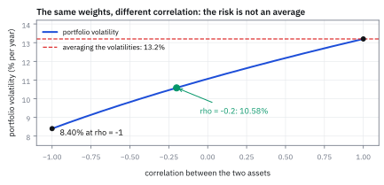
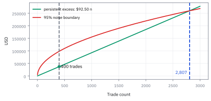

8.2 Linear Transformations and Portfolio Risk
ค่าเฉลี่ยของพอร์ตเป็นค่าเฉลี่ยถ่วงน้ำหนัก แต่ความเสี่ยงของพอร์ตคือ $\sqrt{w^{\mathsf T}\Sigma w}$ ซึ่งนับทุกคู่ที่ถือร่วมกัน
หุ้นสมมติทุกตัวมี SD รายปี 20% และ correlation ทุกคู่เท่ากับ 0.35 ทีมหนึ่งเสนอให้ขยายพอร์ตน้ำหนักเท่ากันจาก 10 ตัวเป็น 100 ตัว โดยอ้างกฎ “SD ลดตาม $1/\sqrt N$” ว่าความเสี่ยงจะเหลือราวหนึ่งในสาม ($1/\sqrt{10}\approx0.32$) คุ้มกับค่าซื้อขายที่เพิ่มขึ้นไหม
ลองตอบก่อนเปิดเฉลย
ไม่คุ้มตามที่อ้าง ในแบบจำลองนี้ SD ลดจาก 12.88% เหลือ 11.94% ลดลงแค่ 7.3% ไม่ใช่สองในสาม และต่อให้ถือหุ้นเป็นพันตัว SD ก็ไม่ต่ำกว่า $20\%\times\sqrt{0.35}\approx11.83\%$ กฎ $1/\sqrt N$ ใช้ได้เฉพาะเมื่อ covariance ระหว่างหุ้นเป็นศูนย์ ส่วนที่ทุกตัวขึ้นลงพร้อมกันไม่หายไปเพราะเพิ่มชื่อ หน้านี้จะนับให้เห็นว่าส่วนนั้นมาจากช่องไหนของ covariance matrix
ภาพรวมก่อนลงสูตร
พอร์ตคือผลรวมถ่วงน้ำหนักของผลตอบแทนรายตัว ค่าเฉลี่ยของพอร์ตจึงเป็นค่าเฉลี่ยถ่วงน้ำหนักธรรมดา แต่ความเสี่ยงไม่ใช่ เพราะวันที่สินทรัพย์หนึ่งขาดทุน อีกตัวอาจกำไรมาชดเชย SD ของพอร์ตจึงต้องคำนวณผ่าน variance ซึ่งใช้ทุกช่องของ covariance matrix: $\sigma_p^2=w^{\mathsf T}\Sigma w$
รูปด้านล่างแสดงความหมายเชิงเรขาคณิตของสูตรนี้ ความเสี่ยงของแต่ละขาเป็นลูกศรยาวเท่า “น้ำหนัก × SD” และมุมระหว่างลูกศรสองอันถูกกำหนดด้วย correlation โดย cos ของมุมเท่ากับ $\rho$ ความเสี่ยงของพอร์ตคือความยาวของลูกศรผลรวม ถ้า $\rho=1$ ลูกศรชี้ทางเดียวกัน ความยาวบวกกันตรง ๆ กรณีอื่นทั้งหมดได้ผลรวมสั้นกว่า ส่วนที่สั้นลงนี้คือประโยชน์ของการกระจายการลงทุน
หน้านี้เริ่มจากบัญชีเงินจริง หาสูตรค่าเฉลี่ยและ variance ของพอร์ต แยกดูทุกช่องว่าใครเพิ่มความเสี่ยงเท่าไร ขยายจากพอร์ตเดียวเป็นหลายกลยุทธ์พร้อมกันด้วย $A\Sigma A^{\mathsf T}$ แล้วใช้ผลนั้นตอบคำถามเปิด และหาพอร์ตหุ้น–หุ้นกู้ที่เสี่ยงน้อยที่สุด
รูป — ความเสี่ยงของพอร์ตคือความยาวของลูกศรผลรวม
ศัพท์ที่ใช้ในหัวข้อนี้
- Portfolio weight $w_i$
- มูลค่าที่ถือในสินทรัพย์ $i$ ต้นงวด หารด้วย NAV ติดลบได้เมื่อ short ใช้แปลงผลตอบแทนรายตัวเป็นผลตอบแทนพอร์ต
- Linear / affine transformation
- $AR$ เป็น linear ส่วน $AR+a$ ที่บวกค่าคงที่เพิ่มเป็น affine ใช้แทนการสร้างพอร์ตหรือกลยุทธ์หลายตัวจากผลตอบแทนชุดเดียวกัน
- Portfolio variance / volatility
- $w^{\mathsf T}\Sigma w$ และรากของมัน volatility ในหน้านี้หมายถึง SD ของผลตอบแทนพอร์ต มีหน่วยเดียวกับผลตอบแทน
- Diversification
- การถือสินทรัพย์ที่ไม่ได้ขึ้นลงพร้อมกันเต็มที่ ทำให้ SD ของพอร์ตต่ำกว่าค่าเฉลี่ยถ่วงน้ำหนักของ SD รายตัว
- Systematic / idiosyncratic risk
- ความเสี่ยงส่วนที่ทุกตัวมีร่วมกัน ซึ่งกระจายไม่หาย กับส่วนเฉพาะตัวที่เฉลี่ยหักล้างกันได้เมื่อถือหลายตัว
- Minimum-variance portfolio
- น้ำหนักที่ทำให้ variance ต่ำที่สุดภายใต้ข้อจำกัดที่กำหนด เป็นจุดซ้ายสุดของ efficient frontier
- Efficient frontier
- เส้นของพอร์ตที่ให้ผลตอบแทนคาดหมายสูงสุดในแต่ละระดับความเสี่ยง ใช้เลือกพอร์ตใน Markowitz portfolio selection
สัญลักษณ์และหน่วย
| สัญลักษณ์ | ความหมาย | หน่วย |
|---|---|---|
| $R,\ \mu,\ \Sigma$ | ผลตอบแทนของสินทรัพย์ mean vector และ covariance ในช่วงถือครองเดียวกัน | ผลตอบแทน; ผลตอบแทน² |
| $w,\ w_c$ | น้ำหนักสินทรัพย์ต้นงวด; น้ำหนักเงินสด (ติดลบเมื่อกู้) | ไม่มีหน่วย |
| $Y=AR+a$ | ผลลัพธ์ $k$ ตัวจากผลตอบแทน $n$ ตัว; $A$ ขนาด $k\times n$ | ผลตอบแทน |
| $N,\ \rho,\ \sigma$ | จำนวนสินทรัพย์ correlation ร่วม และ SD รายตัว ในแบบจำลองน้ำหนักเท่ากัน | —; —; % ต่อปี |
ขั้นที่ 1 — บัญชีเงินสดทำให้น้ำหนักมีความหมาย
เริ่มจากเงินจริงก่อนสูตร ลงทุน \$100 ให้ A กับ B อย่างละ \$50 แล้วไม่ซื้อขายกลางงวด ถ้าได้ผลตอบแทน 10% กับ 4% เงินปลายงวดเป็น \$55 กับ \$52 รวม \$107 ผลตอบแทนพอร์ตคือ 7% ซึ่งเท่ากับ $0.5(10\%)+0.5(4\%)$ พอดี ในกรณีทั่วไปให้ $V_0$ เป็น NAV ต้นงวด $V_i$ เป็นมูลค่าที่ถือในสินทรัพย์ $i$ และ $C$ เป็นเงินสดที่ได้ดอกเบี้ย $r_f$
บรรทัดสุดท้ายได้จากการหาร $V_1-V_0$ ด้วย $V_0$ แล้วใช้ $\sum_iV_i+C=V_0$ ตัดเงินต้นทิ้ง สิ่งที่ต้องจำคือ น้ำหนักของสินทรัพย์เสี่ยงไม่จำเป็นต้องรวมเป็น 1 ถ้ามีเงินสดหรือเงินกู้ เช่น NAV \$100 กู้เพิ่ม \$50 แล้วซื้อสินทรัพย์ \$150 จะได้ $w=1.5$ และ $w_c=-0.5$ ส่วนน้ำหนักติดลบของสินทรัพย์คือการ short ซึ่งขาดทุนเมื่อราคาขึ้น
ขั้นที่ 2 — ค่าเฉลี่ยถ่วงน้ำหนักได้ แต่ SD ต้องผ่าน variance
เมื่อ $w$ และดอกเบี้ยเงินสดเป็นค่าคงที่ที่รู้ล่วงหน้า เขียน $b:=w_cr_f$ จะได้ $R_p=w^{\mathsf T}R+b$ ค่าคงที่ $b$ ย้ายค่าเฉลี่ย แต่หายไปจากการเบี่ยง
บรรทัดที่สี่ใช้ $(w^{\mathsf T}Z)^2=w^{\mathsf T}ZZ^{\mathsf T}w$ แล้วดึง $w$ ซึ่งเป็นค่าคงที่ออกนอกค่าคาดหมาย บรรทัดสุดท้ายคือสูตรเดียวกันเขียนแบบกางทุกช่อง: ช่อง $(i,j)$ ของตารางถูกคูณด้วย $w_iw_j$ แล้วบวกกันทั้งหมด ไม่มีสมมติฐาน Normal ตรงไหนเลย ต้องการแค่ว่าน้ำหนักคงที่และ covariance มีค่าจำกัด
ผลตามมาสองข้อที่ใช้บ่อย: เพิ่ม exposure เป็นสองเท่า ($w\to2w$) variance เพิ่มสี่เท่า SD เพิ่มสองเท่า และค่าธรรมเนียมที่แน่นอนลดค่าเฉลี่ยแต่ไม่เปลี่ยน variance ซึ่งไม่ได้แปลว่าไม่เพิ่มโอกาสขาดทุน
ขั้นที่ 3 — พจน์ไขว้คือส่วนที่การเฉลี่ย SD มองไม่เห็น
กางสูตรสำหรับสองสินทรัพย์ ช่องนอกแนวทแยงมีสองช่อง ($12$ และ $21$) ที่เท่ากัน จึงได้ตัวคูณ 2 ใช้พอร์ตหุ้น 60% (SD 18%) กับหุ้นกู้ 40% (SD 6%) correlation $-0.2$ ตัวเลขรายปีสมมติ คิดในหน่วย %
บรรทัดที่สามจับคู่ $w_i\sigma_i$ ไว้ด้วยกันก่อน คือความยาวลูกศร 10.8 กับ 2.4 ในรูปภาพรวม สูตรนี้คือกฎของ cosine $|a+b|^2=|a|^2+|b|^2+2|a||b|\cos\theta$ โดยให้ $\cos\theta=\rho$ เพราะ correlation คือ cos ของมุมระหว่าง vector การเบี่ยง (inner product มุม และ correlation) เมื่อ $\rho\le1$ และน้ำหนักเป็นบวก จะได้ $\sigma_p\le w_1\sigma_1+w_2\sigma_2$ เสมอ ถ้ามี short ต้องใช้ $|w_i|$ แทน
รูป — พอร์ตเดิม แต่เปลี่ยนสมมติฐาน correlation

ขั้นที่ 4 — ทุกช่องของตารางมีส่วนใน variance
โจทย์ให้อะไรมาบ้าง: จากตาราง covariance รายปีของสินทรัพย์ 8 กลุ่มที่ใช้ฝึกสร้างพอร์ต เลือกสามกลุ่ม: หุ้นกู้สหรัฐ (Bond, variance 0.001005), หุ้นใหญ่สหรัฐสาย value (LV, 0.029609) และหุ้นประเทศพัฒนาแล้วนอกสหรัฐ (Intl Dev, 0.028355) covariance คู่ Bond–LV $-0.000675$, Bond–Intl Dev $-0.000445$, LV–Intl Dev $0.020697$ น้ำหนัก 40%, 30%, 30% เขียนทุกค่าในหน่วย %² (คูณ $10^4$)
คำตอบ: SD ของพอร์ตประมาณ 9.40% ต่อปี ต่ำกว่าค่าเฉลี่ยถ่วงน้ำหนักของ SD รายตัว $0.4(3.17)+0.3(17.21)+0.3(16.84)=11.48\%$ ชิ้นที่ใหญ่ที่สุดไม่ใช่ variance ของสินทรัพย์ตัวไหน แต่เป็นคู่ LV–Intl Dev 37.26 จาก 88.34 หรือ 42% เพราะหุ้นสองก้อนนี้มี correlation 0.71 ขึ้นลงด้วยกันเกือบตลอด ส่วนหุ้นกู้มี variance ของตัวเองแค่ 1.6 และ covariance กับหุ้นติดลบ จึงดึงความเสี่ยงลง
ตรวจเองใน 10 วินาที: นับช่องให้ครบ 9 ช่อง ช่องนอกแนวทแยงมี 6 ช่อง เป็น 3 คู่ที่เท่ากัน ถ้านับแค่ครึ่งบนโดยลืมคูณ 2 จะได้ $88.342-(-1.620-1.068+37.255)/2=71.06$ หรือ SD 8.43% ต่ำเกินจริง ใน spreadsheet การคูณ MMULT ของแถวน้ำหนัก ตาราง และคอลัมน์น้ำหนัก ทำผลรวมทั้ง 9 ช่องนี้ให้อัตโนมัติ
รูป — ทุกช่อง $w_iw_j\Sigma_{ij}$ ของพอร์ตสามสินทรัพย์
ขั้นที่ 5 — หลายกลยุทธ์พร้อมกัน: $\operatorname{Cov}(AR+a)=A\Sigma A^{\mathsf T}$
พอร์ตเดียวใช้แถวน้ำหนัก $w^{\mathsf T}$ แถวเดียว ถ้าต้องการรู้ความเสี่ยงของหลายกลยุทธ์ และ covariance ระหว่างกลยุทธ์ด้วย ให้วางแถวน้ำหนักซ้อนกันเป็น matrix $A$ ขนาด $k\times n$ แล้วบวก vector ค่าคงที่ $a$ (เช่นค่าธรรมเนียมที่แน่นอน) ซึ่งเป็น linear function บวกค่าคงที่
transpose ทางขวาไม่ได้ใส่มาเพื่อความสวย มันเกิดจาก $(A(R-\mu))^{\mathsf T}=(R-\mu)^{\mathsf T}A^{\mathsf T}$ ผลลัพธ์มีขนาด $k\times k$ แถวและคอลัมน์ตอนนี้เป็น กลยุทธ์ ไม่ใช่สินทรัพย์เดิม ถ้า $A$ มีแถวเดียวคือ $w^{\mathsf T}$ สูตรนี้ย่อเหลือ $w^{\mathsf T}\Sigma w$ และถ้า $A=(a,\ b)$ จะได้ $\operatorname{Var}(aX+bY)=a^2\operatorname{Var}(X)+b^2\operatorname{Var}(Y)+2ab\operatorname{Cov}(X,Y)$ ซึ่งเป็นสูตรเดียวกับขั้นก่อน
ลองกับข้อมูลสามวันของ Technology และ Energy (หน่วย bp) ที่มี $\hat\mu=(5,\ 2)$ และ $\hat\Sigma=\begin{bmatrix}1&1.5\\1.5&3\end{bmatrix}$ กลยุทธ์แรก long Technology ครึ่งหนึ่ง short Energy ครึ่งหนึ่ง กลยุทธ์ที่สอง long ทั้งคู่ 60/40
SD ของสองกลยุทธ์เป็น $\sqrt{0.25}=0.5$ กับ $\sqrt{1.56}\approx1.249$ bp และ covariance ระหว่างกันเป็น $-0.45$ ทั้งที่สินทรัพย์เดิมมี covariance บวก เพราะขา short ของกลยุทธ์แรกกลับเครื่องหมายของ Energy ตรวจได้ทันทีด้วยการแปลงข้อมูลดิบทีละวัน: $(4,1)\to(1.5,\ 2.8)$, $(6,4)\to(1,\ 5.2)$, $(5,1)\to(2,\ 3.4)$ แล้วคำนวณ sample covariance ของสองคอลัมน์ใหม่ จะได้ตารางเดียวกัน
ตารางใหม่ยังเป็น PSD เสมอ เพราะพอร์ตใด ๆ ของกลยุทธ์ก็คือพอร์ตของสินทรัพย์เดิมอีกชั้นหนึ่ง แต่ถ้าแถวของ $A$ ซ้ำกันหรือเป็นจำนวนเท่าของกัน กลยุทธ์ก็ถือความเสี่ยงก้อนเดิมซ้ำ และ $A\Sigma A^{\mathsf T}$ จะ singular แม้ $\Sigma$ จะ invertible
รูป — วันเดิม แกนใหม่: เมฆจุดก่อนและหลังคูณด้วย $A$
ขั้นที่ 6 — นับช่องให้ครบ แล้วจะเห็นว่ากฎ $1/\sqrt N$ มาจากไหนและพังตรงไหน
ใช้แบบจำลองที่ตัดรายละเอียดทิ้ง เพื่อให้เห็นกลไกชัด: $N$ สินทรัพย์มี SD เท่ากัน $\sigma$ ถือแต่ละตัว $1/N$ และ correlation ทุกคู่เท่ากับ $\rho$ ตารางมีช่องแนวทแยง $N$ ช่อง และนอกแนวทแยง $N(N-1)$ ช่อง ทุกช่องคูณด้วยน้ำหนัก $(1/N)(1/N)$
ตัวหาร $N^2$ มาจากน้ำหนักคูณกันสองครั้ง ช่องแนวทแยงมีแค่ $N$ ช่อง ส่วนนี้จึงหดตาม $1/N$ แต่ช่องนอกแนวทแยงมีเกือบ $N^2$ ช่อง หารด้วย $N^2$ แล้วเหลือ $\rho\sigma^2$ ไม่ว่า $N$ จะใหญ่แค่ไหน กฎ $1/\sqrt N$ จึงเป็นกรณีพิเศษของ $\rho=0$ ซึ่งใช้ได้กับ variance ล้วน ๆ เช่น $\sigma=20\%$ กับ $N=25$ ได้ $20\%/5=4\%$
| จำนวนหุ้น | $\rho=0$ | $\rho=0.35$ |
|---|---|---|
| 1 | 20.00% | 20.00% |
| 10 | 6.32% | 12.88% |
| 25 | 4.00% | 12.26% |
| 50 | 2.83% | 12.05% |
| 100 | 2.00% | 11.94% |
จาก 10 ไป 100 ตัว SD ลดลง $1-11.94/12.88\approx7.3\%$ คำตอบของคำถามเปิดจึงอยู่ที่ช่องนอกแนวทแยง ไม่ได้อยู่ที่จำนวนชื่อ และถ้าวิกฤตทำให้ correlation พุ่งเป็น 0.80 พื้นนี้จะขึ้นไปที่ $20\%\sqrt{0.8}\approx17.89\%$ แม้ SD รายตัวไม่เปลี่ยนเลย
เห็นส่วนร่วมกับส่วนเฉพาะตัวจากแบบจำลองหนึ่งปัจจัย
ให้ $F,\varepsilon_1,\ldots,\varepsilon_N$ มีค่าเฉลี่ยศูนย์ variance หนึ่ง และ uncorrelated กัน สร้างผลตอบแทนแบบนี้ (ใช้ได้เมื่อ $0\le\rho\le1$)
ส่วนเฉพาะตัว $\varepsilon_i$ เฉลี่ยกันแล้วหดตาม $1/N$ แต่ส่วนร่วม $F$ ถูกถืออยู่ในทุกชื่อจึงไม่หดเลย นี่คือแนวคิดของ systematic risk ที่ CAPM และ factor model ต่อยอด ส่วนนี้กำจัดไม่ได้ด้วยการเพิ่มชื่อ ต้อง hedge ด้วยสิ่งที่มีปัจจัยเดียวกันในทิศตรงข้าม
ถ้า $\rho$ ติดลบ จะเพิ่ม $N$ ไปเรื่อย ๆ โดยตรึง $\rho$ ไว้ไม่ได้ ตาราง correlation ที่ทุกคู่เท่ากันต้องมี $\rho\ge-1/(N-1)$ เพราะ eigenvalue $1+(N-1)\rho$ ห้ามติดลบ (eigenvalues และ positive definiteness) เช่น $\rho=-0.05$ ใช้ได้ถึง $N=21$ ซึ่ง variance ของพอร์ตเท่ากันเป็นศูนย์พอดี ถ้าใช้ $N=22$ สูตรจะให้ variance ติดลบ นั่นคือสมมติฐานที่เป็นไปไม่ได้ ไม่ใช่การกระจายที่เก่งเป็นพิเศษ
รูป — SD ของพอร์ตเท่ากันเทียบกับ SD รายตัว เมื่อเพิ่มจำนวนหุ้น

ขั้นที่ 7 — พอร์ตหุ้น–หุ้นกู้ที่เสี่ยงน้อยที่สุด และ efficient frontier
กลับมาที่หุ้น (SD 18%) กับหุ้นกู้ (SD 6%) correlation $-0.2$ ให้หุ้นมีน้ำหนัก $u$ หุ้นกู้ $1-u$ เขียน variance รายตัวเป็น $v_1,v_2$ และ covariance เป็น $c$ variance ของพอร์ตเป็นพหุนามกำลังสองของ $u$ หาจุดต่ำสุดได้ด้วยการจัดกำลังสองสมบูรณ์
บรรทัดที่สองได้จากการกระจายและจัดกลุ่มตามกำลังของ $u$ สัมประสิทธิ์ $d$ คือ variance ของ $R_1-R_2$ ซึ่งเป็นบวกเมื่อสองสินทรัพย์ไม่ได้เหมือนกันทุกประการ พาราโบลาจึงหงาย จุดยอดอยู่ที่ $u_*$ คำตอบคือหุ้น 14.29% หุ้นกู้ 85.71% ได้ SD 5.27% ต่ำกว่าหุ้นกู้ล้วน (6%) เพราะ covariance ติดลบ ถ้าห้าม short และ $u_*$ หลุดนอกช่วง 0 ถึง 1 ให้ใช้ขอบที่ใกล้ที่สุด
variance ต่ำสุดไม่ใช่เป้าหมายเดียว สมมติผลตอบแทนคาดหมายรายปีของหุ้น 8% หุ้นกู้ 3% เส้นที่ลากจากการเปลี่ยน $u$ บนระนาบ (SD, ผลตอบแทนคาดหมาย) คือ frontier ของสองสินทรัพย์ เป็นเส้นโค้งไฮเพอร์โบลา ครึ่งบนเรียก efficient frontier: ทุกจุดบนครึ่งล่างมีจุดบนครึ่งบนที่เสี่ยงเท่ากันแต่ได้ผลตอบแทนคาดหมายมากกว่า
รูป — frontier ของหุ้นกับหุ้นกู้
ความผิดที่ให้ตัวเลขผิดโดยไม่มีใครเตือน
- เฉลี่ย SD ตรง ๆ: พอร์ต 60/40 ได้ 13.20% แทน 10.58% ถูกเฉพาะเมื่อ $\rho=1$ ทุกคู่ ในพอร์ตสามสินทรัพย์ได้ 11.48% แทน 9.40%
- ลืมตัวคูณ 2 ของพจน์ไขว้: นับช่องนอกแนวทแยงแค่ครึ่งเดียวทำให้พอร์ตสามสินทรัพย์ได้ SD 8.43% แทน 9.40%
- น้ำหนักที่เลือกหลังเห็นผลตอบแทน: สูตรทั้งหมดใช้ $w$ ที่คงที่ล่วงหน้า ถ้าเลือก “ตัวที่ขึ้นมากที่สุดของงวด” ผลตอบแทนจะเป็นค่าสูงสุด ไม่ใช่ $w^{\mathsf T}R$ และ $w^{\mathsf T}\mu$ จะประเมินค่าเฉลี่ยผิด
- กู้เงินเพิ่ม exposure: NAV \$100 กู้ \$50 ที่ 2% ซื้อสินทรัพย์ \$150 ได้ผลตอบแทน $1.5R-0.5(2\%)$ SD เพิ่มเป็น 1.5 เท่า ไม่ใช่เท่าเดิม และดอกเบี้ยลดค่าเฉลี่ยลง
- variance ไม่ใช่ความเสี่ยงทุกชนิด: variance ลงโทษการเบี่ยงขึ้นกับลงเท่ากัน และไม่บอกขนาดของหาง เหมาะกับ distribution แบบ Normal แต่กับ payoff ที่มีหางหนาต้องใช้ตัววัดอย่าง VaR และ expected shortfall ด้วย และ correlation ที่ประมาณในช่วงสงบมักต่ำกว่าช่วงวิกฤต
ใช้ทำอะไรบนโต๊ะจริง
ใน spreadsheet ความเสี่ยงของพอร์ตเขียนเป็น 100 คูณรากของ MMULT ของแถวน้ำหนัก ตาราง covariance และคอลัมน์น้ำหนัก ซึ่งก็คือ $\sqrt{w^{\mathsf T}\Sigma w}$ ในหน่วย % ตัวอย่างเช่นพอร์ตน้ำหนักเท่ากัน 12.5% ในสินทรัพย์ทั้ง 8 กลุ่มของตารางที่ใช้ฝึก ได้ SD 14.73% ต่อปี ขณะที่ค่าเฉลี่ยของ SD รายตัวคือ 18.55% optimizer ของ Markowitz portfolio theory ใช้ $w^{\mathsf T}\Sigma w$ เป็นฟังก์ชันที่ต้องทำให้ต่ำสุด และการแยก variance ทีละช่องแบบรูปตารางสามสินทรัพย์คือจุดเริ่มของ risk decomposition ที่บอกว่าแต่ละตำแหน่งเพิ่มความเสี่ยงเท่าไร
โจทย์ตรวจความเข้าใจ
1. NAV \$100 กู้ \$50 ที่ดอกเบี้ย 2% สำหรับงวดนี้ แล้วซื้อสินทรัพย์ \$150 ถ้าสินทรัพย์ได้ 10% ผลตอบแทนสุทธิเท่าไร ถ้าสินทรัพย์มี SD 20% และดอกเบี้ยแน่นอน SD ของพอร์ตเท่าไร
เฉลย
น้ำหนักสินทรัพย์ $w=150/100=1.5$ เงินสด $w_c=-50/100=-0.5$ ผลตอบแทน $1.5(10\%)+(-0.5)(2\%)=15\%-1\%=14\%$ ตรวจด้วยเงิน: สินทรัพย์โตเป็น \$165 จ่ายคืนเงินกู้ \$51 เหลือ \$114 จาก \$100 คือ 14% ส่วน SD คือ $1.5\times20\%=30\%$ เพราะดอกเบี้ยแน่นอนเป็นค่าคงที่ ไม่เพิ่ม variance
2. แบ่งเงินครึ่งหนึ่งให้กลยุทธ์ long–short และอีกครึ่งให้กลยุทธ์ 60/40 จากข้อมูลสามวันด้านบน ค่าเฉลี่ยและ SD ของพอร์ตรวมเป็นเท่าไร
เฉลย
ใช้ผลของ $A\Sigma A^{\mathsf T}$ เป็น covariance ของสองกลยุทธ์ แล้วใช้สูตรพอร์ตอีกชั้นด้วยน้ำหนัก $(0.5,\ 0.5)$ ค่าเฉลี่ย $0.5(1.5)+0.5(3.8)=2.65$ bp variance $0.25(0.25)+0.25(1.56)+2(0.5)(0.5)(-0.45)=0.0625+0.39-0.225=0.2275$ bp² SD ประมาณ 0.477 bp ต่ำกว่าทั้งสองกลยุทธ์ เพราะ covariance ระหว่างกันติดลบ ตรวจอีกทาง: พอร์ตรวมคือน้ำหนัก $0.5(0.5,-0.5)+0.5(0.6,0.4)=(0.55,\ -0.05)$ บนสินทรัพย์เดิม ได้ $0.3025(1)+0.0025(3)+2(0.55)(-0.05)(1.5)=0.2275$ เท่ากัน
3. สินทรัพย์ 1 มีผลตอบแทนเฉลี่ย 1% variance 0.1 (%²) สินทรัพย์ 2 เฉลี่ย 2% variance 0.5 correlation 0.25 หา covariance และน้ำหนักของสินทรัพย์ 1 ที่ทำให้ variance ต่ำสุด variance ที่ได้ต่ำกว่าของสินทรัพย์ 1 หรือไม่
เฉลย
covariance $=0.25\sqrt{0.1\times0.5}=0.25\sqrt{0.05}\approx0.0559$ จากนั้น $d=0.1+0.5-2(0.0559)=0.4882$ น้ำหนักสินทรัพย์ 1 คือ $u_*=(0.5-0.0559)/0.4882\approx0.910$ ได้ variance $0.5-0.4441^2/0.4882\approx0.0960$ ต่ำกว่า 0.1 ของสินทรัพย์ 1 เล็กน้อย ทั้งที่ผสมสินทรัพย์ที่ variance สูงกว่าห้าเท่าเข้าไป 9% และได้ผลตอบแทนเฉลี่ยเพิ่มเป็น $0.910(1)+0.090(2)\approx1.09\%$ เพราะ correlation น้อยกว่า $\sigma_1/\sigma_2=\sqrt{0.1/0.5}\approx0.447$ การเติมสินทรัพย์ที่สองนิดหน่อยจึงลดความเสี่ยงได้
คำนวณซ้ำด้วย JavaScript
เปิดดูโค้ด
const quad = (S, w) => w.reduce((s, wi, i) =>
s + wi * S[i].reduce((t, x, j) => t + x * w[j], 0), 0);
const mul = (A, B) => A.map(r => B[0].map((_, j) => r.reduce((s, x, k) => s + x * B[k][j], 0)));
const tr = A => A[0].map((_, j) => A.map(r => r[j]));
// 60/40 หุ้น-หุ้นกู้ (หน่วยทศนิยม)
const sd = [0.18, 0.06];
const S2 = rho => [[sd[0] ** 2, rho * sd[0] * sd[1]], [rho * sd[0] * sd[1], sd[1] ** 2]];
console.log([-1, -0.2, 0, 1].map(r => Math.sqrt(quad(S2(r), [0.6, 0.4])))); // .084 .1058 .1106 .132
// สามสินทรัพย์จากตาราง 8 กลุ่ม: Bond, LV, Intl Dev
const S3 = [[0.001005, -0.000675, -0.000445],
[-0.000675, 0.029609, 0.020697],
[-0.000445, 0.020697, 0.028355]];
const w3 = [0.4, 0.3, 0.3];
const cells = S3.map((r, i) => r.map((x, j) => w3[i] * w3[j] * x * 1e4)); // %^2
console.log(cells, Math.sqrt(quad(S3, w3))); // ... 0.0940
// หลายกลยุทธ์: A Sigma A^T
const A = [[0.5, -0.5], [0.6, 0.4]], Sb = [[1, 1.5], [1.5, 3]], mu = [5, 2];
console.log(A.map(r => r[0] * mu[0] + r[1] * mu[1]), mul(mul(A, Sb), tr(A))); // [1.5,3.8] [[.25,-.45],[-.45,1.56]]
// พอร์ตเท่ากัน N ตัว correlation rho
const eq = (N, s, rho) => s * Math.sqrt(rho + (1 - rho) / N);
console.log([1, 10, 25, 50, 100].map(N => [N, eq(N, 0.2, 0), eq(N, 0.2, 0.35)]));
// minimum variance หุ้น-หุ้นกู้
const v1 = 0.0324, v2 = 0.0036, c = -0.00216, d = v1 + v2 - 2 * c;
const u = (v2 - c) / d;
console.log(u, Math.sqrt(v2 - (v2 - c) ** 2 / d), 0.08 * u + 0.03 * (1 - u)); // 1/7 .0527 .0371สิ่งที่ควรตอบได้หลังอ่าน
- แปลงบัญชีเงินเป็นน้ำหนักต้นงวดได้ และรู้ว่าน้ำหนักสินทรัพย์เสี่ยงไม่จำเป็นต้องรวมเป็น 1 เมื่อมีเงินสดหรือเงินกู้
- ค่าเฉลี่ยของพอร์ตคือ $w^{\mathsf T}\mu$ ส่วน variance คือ $w^{\mathsf T}\Sigma w=\sum_i\sum_jw_iw_j\Sigma_{ij}$ ซึ่งนับทุกช่องรวมพจน์ไขว้สองครั้ง
- มองสองสินทรัพย์เป็นลูกศรสองอันที่ทำมุม cos เท่ากับ $\rho$ ได้ SD ของพอร์ตคือความยาวลูกศรผลรวม และไม่เกินค่าเฉลี่ยถ่วงน้ำหนักของ SD
- สำหรับ $Y=AR+a$ ได้ $\mathbb E[Y]=A\mu+a$ และ $\operatorname{Cov}(Y)=A\Sigma A^{\mathsf T}$ โดยไม่ต้องสมมติ Normal
- กฎ $1/\sqrt N$ ต้องมี covariance เป็นศูนย์ เมื่อ correlation ร่วมเป็น $\rho$ SD ของพอร์ตเท่ากันมีพื้นที่ $\sigma\sqrt\rho$ ที่เพิ่มชื่อเท่าไรก็ไม่หาย
- หาน้ำหนัก minimum-variance ของสองสินทรัพย์ $u_*=(v_2-c)/d$ ได้ และอ่าน efficient frontier ได้ว่าทำไมครึ่งล่างไม่มีใครควรเลือก
หน้าถัดไป zero covariance ไม่ได้แปลว่าอิสระ จะแสดงว่า covariance ที่ใช้มาทั้งหน้านี้จับได้เฉพาะความสัมพันธ์เชิงเส้น และ covariance เป็นศูนย์ยังซ่อนความสัมพันธ์ที่แรงมากไว้ได้